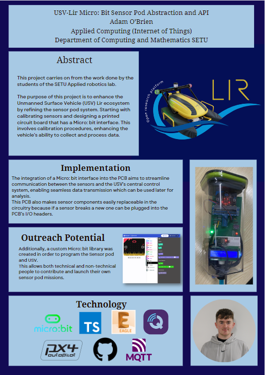

Project Description
Academic Title - "USV-Lir Micro: bit Sensor Pod Abstraction"
Commercial Title - "Micro:Bit Sensor Pod breakout Board"
Demo Video
Project Poster
Add your project poster content here...

Adam O'Brien
Applied Computing (Internet of Things) SETU